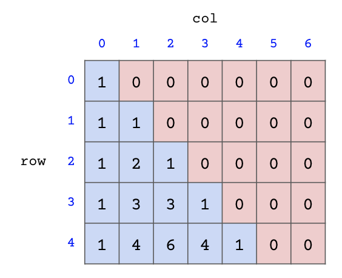

Discussion 5: Tree Recursion
Tree Recursion
For the following questions, don't start trying to write code right away. Instead, start by describing the recursive case in words. Some examples:
- In
fibfrom lecture, the recursive case is to add together the previous two Fibonacci numbers. - In
double_eightsfrom lab, the recursive case is to check for double eights in the rest of the number. - In
count_partitionsfrom lecture, the recursive case is to partitionn-musing parts up to sizemand to partitionnusing parts up to sizem-1.
Q1: Maximum Subsequence
A subsequence of a number is a series of digits from the number (not necessarily contiguous). For example, 12345 has subsequences like 123, 234, 124, 245, etc. Your task is to find the largest subsequence that is under a specified length.
Run in 61A CodeHint: To add a digit (
d) to an existing number (n), calculate:n * 10 + d. For instance, to add8to15to get158, compute15 * 10 + 8.
Q2: Making Onions
Write a function make_onion that takes in two one-argument functions, f and
g. It returns a function that takes in three arguments: x, y, and
limit. The returned function returns True if it is possible to reach y
from x using up to limit calls to f and g, and False otherwise.
For example, if f adds 1 and g doubles, then it is possible to reach 25 from
5 in four calls: f(g(g(f(5)))).
Q3: Pascal's Triangle
Pascal's triangle is a recursively defined mathematical structure. Here are the first five rows of Pascal's triangle:

Every number in Pascal's triangle is defined as the sum of the number above it and the number above and to the left of it. Rows and columns are zero-indexed; that is, the first row is row 0 instead of row 1 and the first column is column 0 instead of column 1. For example, the number at row 2, column 1 in Pascal's triangle is 2.
Define the function pascal, which takes a row and column
and finds the value of the number at that position in Pascal's triangle.
Note that row and column will always be nonnegative.
Run in 61A CodeHint: For which positions can we find the corresponding number in Pascal's triangle without recursion? Remember that positions are zero-indexed!